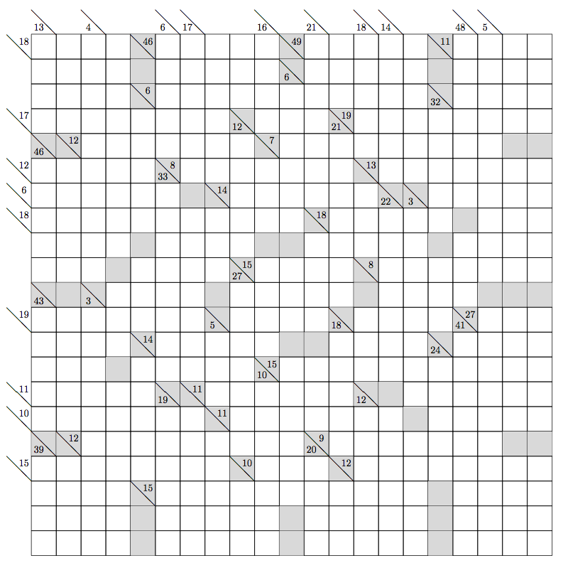

Across
3 Letters
1. Snooze
2. Letters following some names
3. Energy
4. Word with arabic or tree
5. Labrador, for instance
6. At least one
4 Letters
1. Hitchcock film
2. Patriotic British composer
3. Fighting
4. Stuff
5. Highland hillside
6. Bidding system with a weak no trump
7. Northern European
8. One may feel them
9. Traditional dance
10. You can do it with an ear
11. Metric prefix
12. French holiday
13. Old Order Amish do not have them (abbr.)
14. Latin accusation, briefly
15. Type of thermal camera, briefly
16. Where you can find ALEX, NED, and SAM
17. Belongs (with)
18. Shady character (British slang)
19. Phoenician letter
20. Genus with showy flowers
21. Mild oath
22. When repeated, the title of an Arctic Monkeys song about a train
23. Hunt Headquarters might give you one
24. Word with live or high
5 Letters
1. Placed
2. Spanish wine region
3. Type of ink, or the origin of the final answer to this puzzle
4. Part of a wintry mix
5. Brad Pitt film
6. High- (language)
7. Recently revived Broadway musical
8. Reams
9. Unit of volume
10. Director Kazan and others
11. 1980s rock band from Sacramento
12. Toy Story character
13. Aweigh
14. Museum of Science prefix
15. Circles
16. Drink with milk
17. Large artery
6 Letters
1. Like blue cheese
2. Frock
3. Knife for clearing vegetation
4. One might spend about 1/170 of its life as an adult
7 Letters
1. You may let them know you have a problem
2. Shared (in)
3. Colored parts of eyes
4. Topic for a violin lesson
5. Doctor's orders, sometimes
6. Triangular
7. Show disdain toward
8. Treats like Napoleon?
8 Letters
1. Latin hymn
2. Soft fabrics
3. Old World sauce made from a New World fruit
4. Mary Ann Summers, for instance
9 Letters
1. Shady, as a path
2. Heinlein antagonists
11 Letters
1. Clue for certain items; the ones in the grid that are labeled correctly spell the final answer
2. Clue for certain items; the ones in the grid that are labeled correctly spell the final answer
3. Clue for certain items; the ones in the grid that are labeled correctly spell the final answer
4. Clue for certain items; the ones in the grid that are labeled correctly spell the final answer
Down
3 Letters
1. It might shock you
2. Wrest (from)
3. Can. province
4. Unfamiliar
5. Shoe specification
6. Traditional sash
7. Classic RPG
8. Vegetable or mineral, for example
9. Golfer Michelle
10. D.C. Thomson & Co. designation
11. Peruvian pair
12. He can help you understand the Matrix
13. Racket
14. 1970s Muppet with a banjo, or his performer
15. Toss, as a grenade
4 Letters
1. Lug
2. Manx
3. Degs. for those on the five-year plan, perhaps
4. Grouch
5. New York college
6. Certain songbirds
7. An Olympian
8. When repeated 18 times, most of the lyrics of an Arctic Monkeys song with the same title
9. Word before or after kangaroo
10. Westernmost cape of continental Europe
11. Some batteries
12. Info. for loans
5 Letters
1. Heath plant
2. Side splitters
3. Relate
4. Vedic drinks
5. : The Issue (Bollywood film)
6. Farpoint Station star
7. Not burning
8. Acrylic fiber
9. A, E, I, O, U, or Y, at times
10. Simple
11. Former Institute Professor Scrimshaw
12. à vous-même
13. Geopolitical org. represented by an appropriate food crop on its flag
14. Money in the bank?
15. Napped clothing material
16. Type of lord or profit
17. Eat at
18. Little cuts
6 Letters
1. It can help you understand a matrix
2. You can hold someone in it
3. Finds, with "up"
4. College coach Bryan
5. Game from Russia
6. Cannes star
7. Harbor
8. Circles
9. Likely
10. Ways to bays, maybe
7 Letters
1. Comes
2. Marilyn Monroe film
3. Most sore
4. Parched
5. Beantown sports nickname
6. Without intermission
7. Man (ancient Brit)
8. Dimensionless units of measure
8 Letters
1. Eleven catchphrase
2. One may light your fire
9 Letters
1. Improve
2. What a restaurant might do to your water
10 Letters
1. Of interest to gem carvers
2. Fourth floor, in the Falklands
3. One may belong to a Worshipful Society
4. National Park known for glow worms